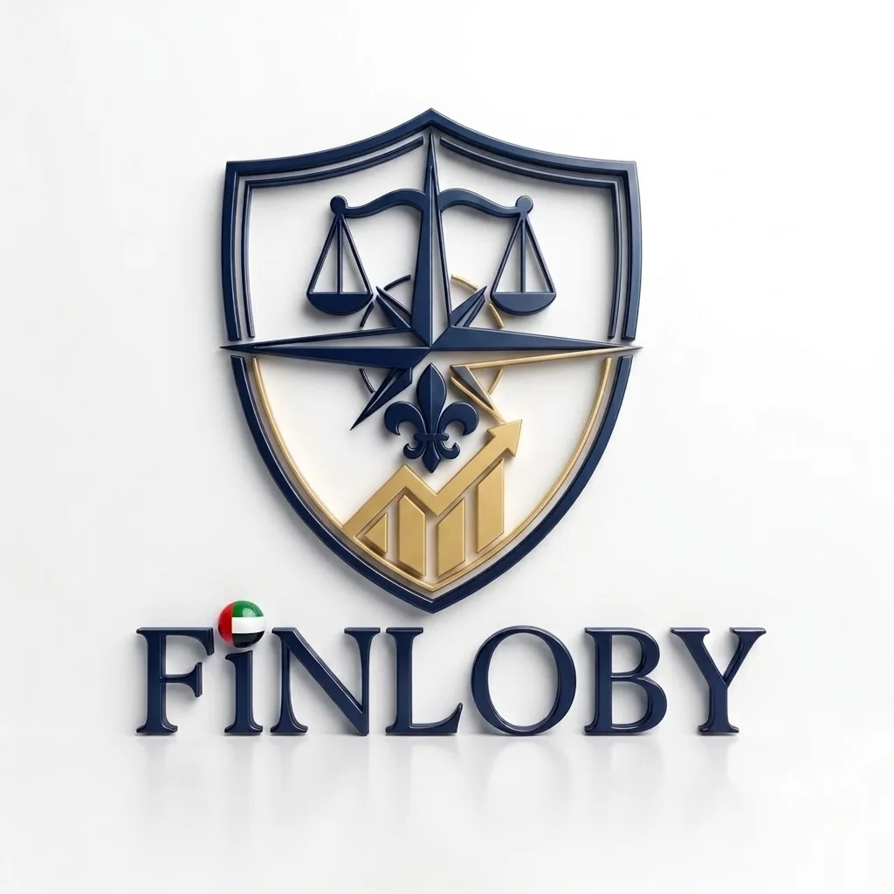
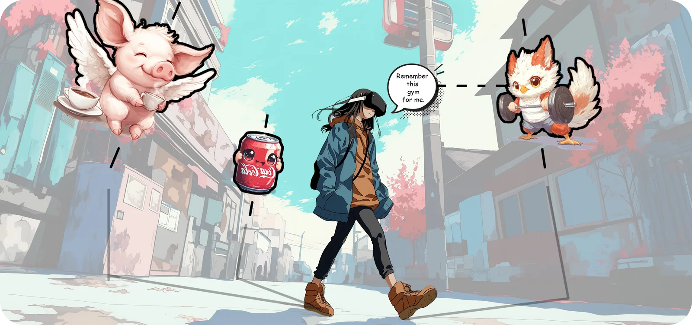

User interviews
Listening for needs, friction, language, and context.
I'm Manasvi, a B.Des. student at Graphic Era. I am building my direction around understanding people, improving content, and making digital journeys easier to follow.
↓Direction I am testing
01
A focused next step
I am most interested in the point where user behaviour, words, and structure meet. My near-term goal is to learn through research-led product work—not to be defined by the industries in the collaborations below.
I am looking for an internship with mentoring, real user contact, and a chance to turn evidence into clearer flows, interface copy, or service journeys.
Listening for needs, friction, language, and context.
Finding where a journey becomes confusing or slow.
Making labels, instructions, and decisions easier to understand.
Turning notes and patterns into useful next steps.
Education
02
Graphic Era
Graphic Era (Deemed to be University), Dehradun
Supporting collaborations
03–05
These projects show where I helped and learned. They are not solo case studies, and their industries are not the specialization I am choosing.

03CollaborationExposure to simplifying a complex financial-services experience.
My contextI assisted Devgghya Kulshrestha through WebGraphic Bee. I am crediting the collaboration without claiming sole ownership.
Visit live product ↗Exposure to clear service paths, an estimate flow, and a confidential enquiry journey.
My contextI assisted Devgghya Kulshrestha on parts of this experience. It is supporting work, not a solo project.
View private preview ↗
05ExplorationEarly exposure to how research questions can become an interactive prototype.
My contextI supported an exploratory collaboration and learned from the process. XR is not the field I am currently targeting.
View research context ↗Experience
06
WebGraphic Bee
I support founder-led work where useful, learn how briefs become deliveries, and contribute through communication, visual care, and project follow-through.